Saturday, April 19th, Ba Be Lake, Vietnam
Ha Giang Loop —> RATED. I returned from the legendary 4 day three night Ha Giang loop two days ago and it was absolutely incredible. I thought it would be over rated since so many people talked about it throughout SE Asia, but it was well worth the hype. I have been motorbiking Vietnam for 2.5 weeks and the Ha Giang Loop is for sure some of the greatest scenes I have seen all trip. I did the Ha Giang Loop with a famous company called “Jasmine Tours” per the recommendations of my good friends Max and Kyle. I did the loop with a company for two reasons: 1. Police - The police have checkpoints throughout the loop and if you do not have an international drivers license they fine you a lot of money 2. More fun - It is more fun to do it with a group to meet people and have fun activities at night. There are over 100 companies which do the Ha Giang Loop tour and Jasmine is known for being on the “younger and party side”. I was skeptical about this at first but it turned out to be not too young or party for me! Also different companies drive the loop at different speeds. My group was zooming up and down the curvy roads of the mountain side. I drive fast and I could barely keep up! On the tour through Jasmine there were about 15 groups with 10 people each. My group was the last out of all the groups. They space out when each group goes to different sites so it doesn’t get too crowded. I honestly was so happy and lucky we were the last group because at each site it was completely empty. Some people complain the loop was too crowded, but for me it felt like I was all alone at some times. Another note was that Jasmine gave me a really good discount for driving myself and bringing my own bike. Another important thing to know about the Ha Giang Loop is that >99% of people use an “easy driver”. This means that they do not drive the loop themselves, they sit on the back of a Vietnamese man’s bike the whole time. Some people say it is better to take pictures and enjoy the views. I think if you do not drive the loop yourself you are soft and weak. I was looking at all these men in their early 20s doing dick in ass with their Vietnamese driver all day and just thought how emasculating that is! Also whenever you are on a group trip you always learn about the group dynamic and where you lie within it. In my group there were: two Canadian female friends, an Irish couple, two young British girls, a cool older British guy, a Dutch girl and myself. Some takeaways from the group dynamic within my small group and the greater 150 person tour. I am still so amazed by how much Europeans smoke, specifically UK, French, and Spanish. They smoke for breakfast, lunch and dinner. They are smoking cigarettes nonstop. My favorite people I met from the group were from Norway and South Africa. As I mentioned before I do not connect well with most mainland Europeans and this trip reaffirmed this fact. I realized I believe in Peninsula supremacy, I think people raised on peninsulas are superior species. That is just a joke but I do believe people raised near the water and beaches are typically more adventurous, outgoing, cool and down to earth. That is why I liked the Norwegians and South Africans I met. I also met a 28 year old guy from Lao who is a tech startup founder. We had a long and nice technical conversation. Next another big takeaway from the trip was how I was always late, the last person to return to the group after our activities. For example, the leader of our 9 person group would say “40 minutes to explore the waterfall” and I would come back 1.5 hrs later. This happened at every stop. It is an interesting phenomena I will dissect now. I have been in a lot of group dynamics, mostly due to attending Camp Coleman summer camp for 5+ years growing up. As a kid I always feared and respected authority. I was always the guy who wanted to be back on time and not anger the adults. My friends were more rebellious than me and laughed in authorities face. I learned from them and took some of their energy and learned the benefits and drawbacks of this approach over time. Now that I am an adult, traveling the world on my own dime, I do not want someone telling me when or where you have to be. Of course I understand going on a group trip you have to respect other’s time and this is what I signed up for, however I still did everything on my own and own time. It was interesting seeing how my friends when I was 11 years old could teach me so much at 25. This also means you always must keep childish energy alive. Don’t be too serious and have fun in life! Some people just follow authority blindly and are so serious. This is also why I hope to never work for someone else again or at least have a sense of real freedom of expression and fun within the work environment. People tell so many white lies, including myself, just to be politically correct or make someone feel better. I am committed to an era of unfiltered honesty. I think you can see that and understand that from this blog. Well that was a really fun post. Today I drove over 200 km from Ha Giang to lake Ba Be. I have been motorbiking for 20 days and will keep on kicking!
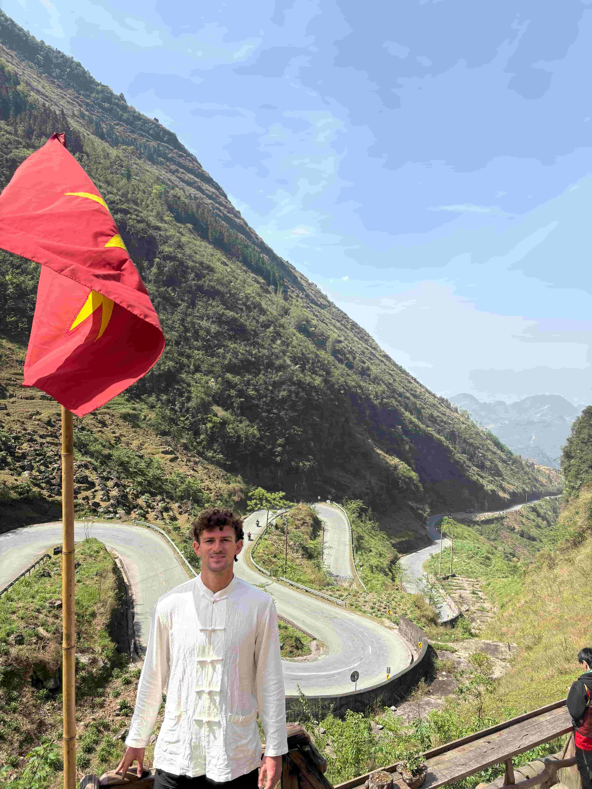
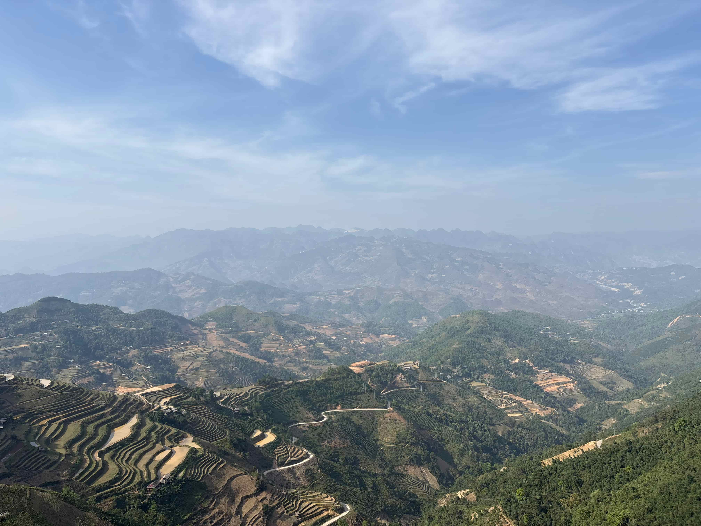
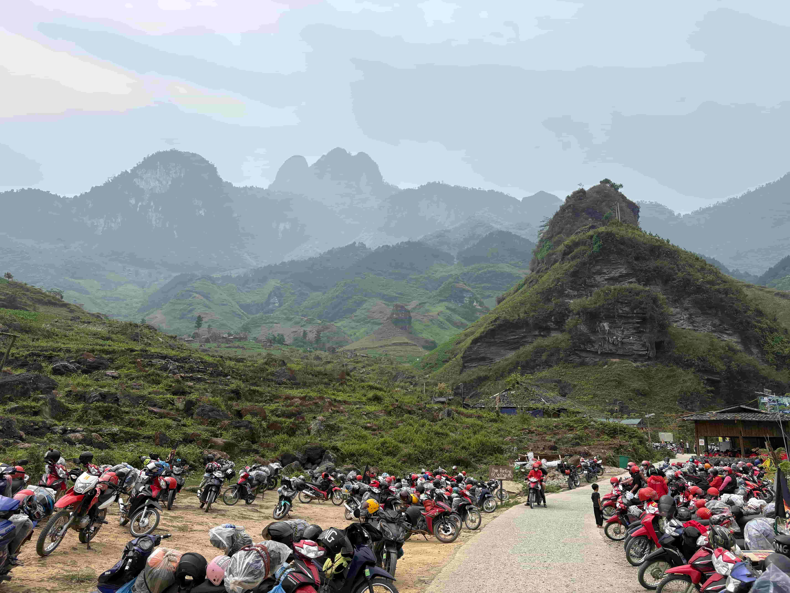
Sunday, April 13th, Ha Giang, Vietnam
After a much-needed four-night rest in Sapa, I’m drove 250-kilometers today to Ha Giang to start the legendary Ha Giang Loop tomorrow. In Sapa, I did some trekking through the local indigenous communities , had some good food, and got to go back to the gym. One thing I really like about Vietnam, and I think is poised for great economic and social growth in the future, is how many babies there are. When you look at the data online, Vietnam’s median age is 35, and everybody knows a young workforce is very beneficial for the economy. In the U.S. or Japan, an aging workforce really puts a strain on the economic well-being. Even in the streets, you see babies on the back of motorcycles in a little sack being carried by their mom, or even kids as young as six or seven years old carrying baby siblings as well. It’s crazy to see. It’s really awesome how much life there is here. One of the most lively countries, I think, just because of how young and how many babies there are. While being in Sapa, I let my mind wander about the future of the world and what society needs. When I was on the top of my homestay in the middle of the mountains in rural Vietnam you still get lightning-fast Wi-Fi. Even the most rural indigenous communities are connected to the Internet and have phones. As society scales into the future, more and more people will be connected to the Internet, and then that means more and more people will need to have access to AI and other cutting-edge technologies. I think almost everybody in the world has access to some form of Internet, but how will AI accessibility be brought into the world? I mean, anybody can download ChatGPT right now, but I want to think about this deeper. Also, the need for fuel. There’s so many motorbikes here, and every gas station is always slammed. As we go into the future, more and more people are going to need to consume more and more fuel to fuel vehicles, industry, manufacturing… There’s so many different methods of producing energy, and I’m definitely a big proponent of clean energy, the biggest fan of nuclear energy. In a later post I will do a deep dive on the various clean energy forms and my takes. Lastly, I have been thinking of various freelancing methods to make money. Things that have come to mind are tutoring, pub design, website design. It is important to do something you enjoy. Your time should be spent enjoying rather than slaving away at something you do not care about. Happy Pesach, this year I really think I embodied the theme of leaving Egypt and slavery and venturing out into the unknown. I want to give a full detailed post to this idea as well. 4 Days, 3 nights on the legendary Ha Giang Loop starts tomorrow. I will see you all then!
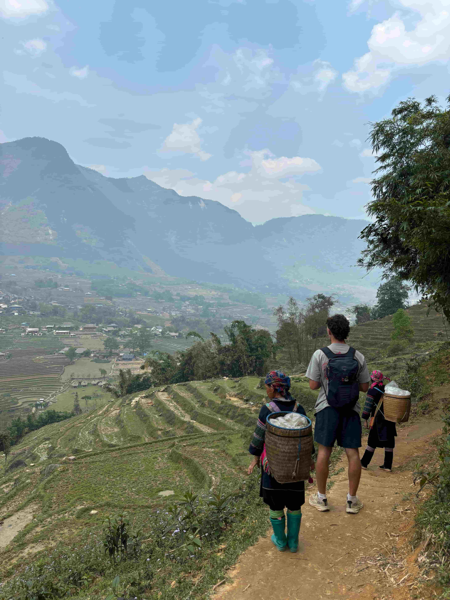
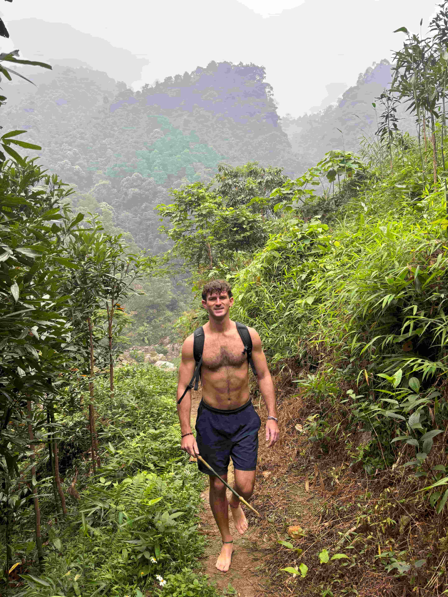
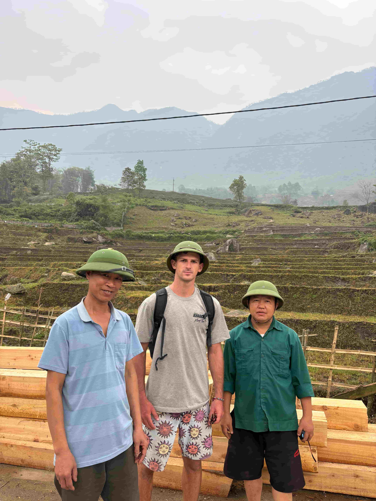
Thursday, April 10th, Sapa, Vietnam
Today was a much-needed rest day from riding my bike.
When I woke up, I had a great FaceTime call with Zach and Jared. It's amazing having close friends you can always share your life and laugh with. Life is meant for sharing.
In the past, I wasn’t as open about my inner world. I used to think people had to “earn” the right to get to know me better. But through my travels — and especially through this blog — I’ve learned to put myself out there. I feel like I have so much to give, to share, and to teach. I’ve realized I’m a natural teacher. I loved tutoring and coaching math teams growing up.
Through this blog, many people have reached out to me saying it’s helped them or challenged their perspectives. Life is like a beautiful canvas waiting to be designed. And a beautiful painting isn’t meant to hang alone in your bedroom — it’s meant to be shared and enjoyed by everyone. People have different tastes in art, of course. That’s why I’m hesitant to give advice. Everyone is so different. I can only share what has worked for me, based on my own experiences.
That, to me, is a big sign of personal growth.
In university, I used to tell people how to meditate or how they should spend less time on their phones. Even though those things are important, there’s no one-size-fits-all solution.
Today, I met up with Rachel again and shared everything that’s happened to me over the past month. It was surreal having a real, in-person conversation after not having one for almost a month. As my good friend Kyle and I once discovered, talking and sharing your experiences out loud helps you fully realize how wild your journey has been.
Riding my bike alone through the countryside of Vietnam for the past 10 days, I hadn’t fully processed how cool and adventurous it really was. But when I shared even the small stories with someone else, I could finally embody just how meaningful it all was. Verbalizing experiences is powerful. The power of words is powerful. And hopefully, sharing it all through this blog is just as impactful.
If you’ve been following this site over the past six months, you may have noticed a big update to the design. This is the third iteration, and I’m really happy with how it looks. I hope you enjoy it too.
I even bought a domain name, and I’ll be posting it on Google so more people can discover it and hopefully share in the experience.
May the words of my mouth and the meditations of my heart be acceptable to you.
Wednesday, April 9th, Sapa, Vietnam
So, I turned 25 on Monday. Twenty-five is, I think, a strong age. Birthdays are always a good time for reflection. Humans love marking milestones, and I think it's important. If there were no cycles in life, there would be nothing to look forward to. The cyclical nature of the planets and stars literally dictates our mindsets. If there were no patterns, we'd just be floating aimlessly. So, I began writing down some things I care about at the age of 25. These things make up my current ego.
Here’s what I’ve got so far:
Sleep: Become professional sleeper
Sports - basketball, soccer, surf, snowboard, pickleball, pádel, weightlifting
Water- drink ample water
Fruit shakes - coconut, mango, passion fruit
Tea - really dive into benefits of tea culture
Sauna
Sun- live my the beach, sun keeps you energized
Adventure and travel
Sushi
Judaism
Read/write
Music: karaoke, guitar, dance
There is no real reason or deep explanation behind these things. While riding my bike, I thought about aspects of my life that I like and want to continue improving upon, and these came up. I’ll elaborate a little on the first one, "Sleep," because it might seem odd at first.
Sleeping in dorm rooms around the world for half a year made me truly appreciate the necessity of a good night’s rest to tackle the following day with energy. I've experienced some extremely uncomfortable sleeps. When I don’t sleep well, I wake up cranky and tired, and I can’t give my best self to the world. I've realized the importance of becoming a professional sleeper.
Now, let me also comment on the importance of the sun. I’ve been in Vietnam for just under two weeks. The weather is mild but cloudy, and I feel less energized when the sun isn’t shining. I really hope to live somewhere sunny year-round and close to nature. I’m very grateful I was raised in Florida, but I took that sun for granted.
Okay, now about today: I drove for five hours, quite far and long. The past ten days on my bike, I’ve been out of civilization. This has happened throughout my trip. Today, I arrived in Sapa, a major city in Northern Vietnam. It’s always weird readjusting to civilization. Everything is easier. You can go to a grocery store or have a well-cooked meal. On the adventure away from society, these things aren’t a given. It makes you appreciate modern society, but also realize its drawbacks.
I hear so much street noise while writing this, which is a stark contrast to the quietness and serenity of the mountains. But the mountains don’t have Snickers and coconut water at convenience stores downstairs. There are pros and cons to organized society and culture. I think being able to move between the wild and the tame is a beautiful tango.
Tuesday, April 8th, Mu Cang Chai, Vietnam
Today was amazing. It was my favorite day riding my bike so far. It started off with waking up after one of the best sleeps I've had on my whole trip. I treated myself to a private room in a resort for my birthday. The bed was comfy, the temperature was perfect, and my room was by a river. I slept throughout the night and didn’t have to be concerned with obnoxious roommates. After waking up refreshed, I turned on the University of Florida vs. University of Houston NCAA Basketball championship. I was able to stream it on Streameast easily. I watched the whole game. UF won the national title, and I was so happy. I almost cried, but I didn’t. I wish I had been watching the game with friends at a crowded sports bar. One of the first things I’m going to do when I get home is go to a Gator football game. After watching the game, I checked out and continued my journey. I wanted to go to a gym, but all of the gyms in the area were closed. I had some of the best beef pho of my whole trip for lunch. I drove through beautiful villages and terraced rice fields. I swerved around the mountainside, going up and down with the wind in my face. What an awesome feeling. I found a cheap homestay on Booking.com and tried to drive to it. Google Maps took me up a mountain and through dirt roads. It said I was 5 minutes away from the homestay when I approached a path I could not navigate with my bike. I decided to turn around and head back down the mountain. Night was about to fall, so I wanted to get off the mountain quickly. I checked my email, and the homestay had given clearer instructions on how to get there. I drove another 30 minutes back up the mountain, but in a different direction. My bike barely made it. I had to go up literal 45-degree inclines. I safely arrived just before nightfall.
I am now far up in the mountains with a Hmong family. Somehow, they have Wi-Fi. This is probably the most authentic experience I’ve had. I’ve hunted with the Hadza in Tanzania, trekked through rural Nepalese villages, and lived on a local Lao farm, but this homestay is truly unique. I am the only one here, high up on the hills in the middle of nowhere, Vietnam. Pigs are oinking outside my door. I ate dinner with the family. They made chicken, sweet potatoes, lots of rice, and some other things I have no clue about. I tried chicken blood, and it wasn’t bad.
As I’m writing this, I realize I’m not giving the day full justice. I’ll never be able to put into words what I’m seeing and experiencing. I’m doing the best I can to share my experiences and learnings with anyone reading this. Thanks for sticking with me, and I’m sorry I can’t fully convey the scenes.
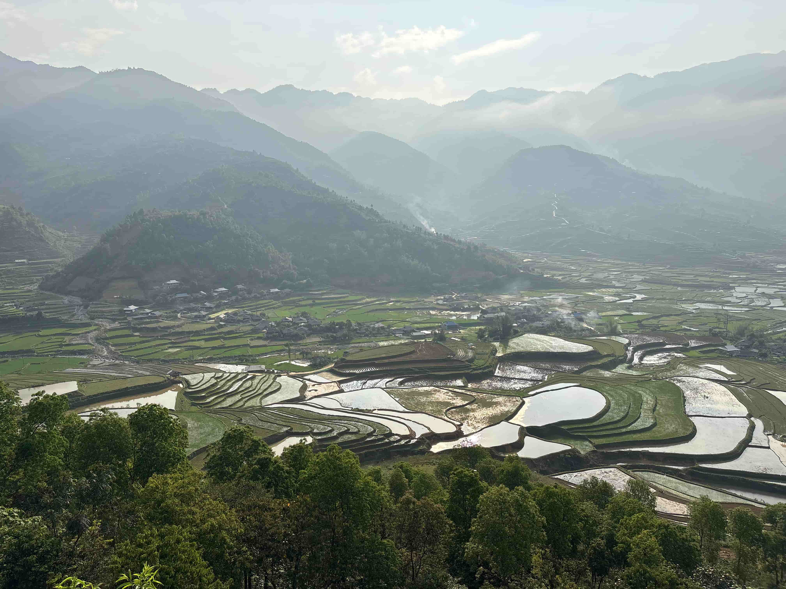
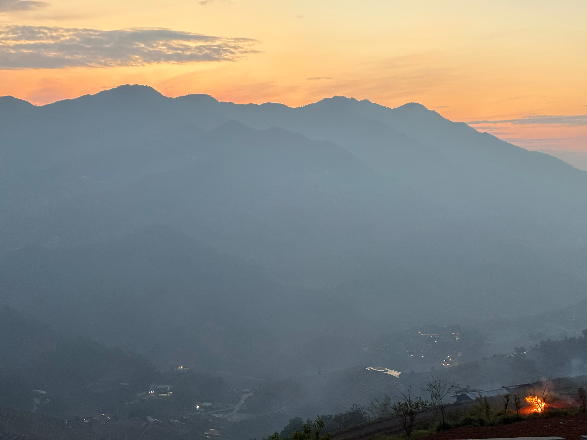
Sunday, April 6th, Tà Xùa, Vietnam
Why did the chicken cross the road?
I never really knew where this age-old saying came from—until I bought a motorbike and drove through rural Vietnam.
Picture this: you’re riding through mountainous landscapes, past beautiful terraced rice fields and lush jungle. You weave up and down hills while dodging wildlife at every turn.
First, the cows. They’re the easiest to avoid—slow and usually hanging out on the side of the road, minding their business.
Second, the dogs. These dogs are unbothered. They lie in the middle of the road and don’t flinch when a bike approaches. They’re like big, hairy rocks. I think they’re just so malnourished that they lie there, tired and unmoving.
Finally, the most lethal: the chickens.
Chickens are skittish and travel in groups, usually one mama and a bunch of chicks. For some reason, they always run across the road—always! Just as you're riding by, they sprint directly in front of your bike. It’s wild. Super dangerous for them, and for me. I'll be cruising along and suddenly—six chickens dart across the road. Sometimes they even take flight if it's too close.
The worst thing would be to annihilate a chicken and crash. I've had a few close calls, all involving chickens.
There are also water buffalo, goats, and horses out here, but they’re no threat—they usually stay off in the grass, far from the road.
Today I drove three hours to the very mountainous region of Tà Xùa. Last night I stayed at a nice homestay where I was the only guest. This morning, I even had to board a boat to cross a river—pretty cool.
Tà Xùa is famous for cloud hunting, or săn mây in Vietnamese. It sounds strange, but it’s actually a big thing here. Since it’s a Vietnamese holiday this weekend, a lot of young locals have flocked to Tà Xùa. Vietnamese youth love going phượt, which means backpacking or motorbiking to wild places. It’s really cool to see domestic tourism like that.
This region is also home to many Hmong people—an ethnic minority originally from the mountainous areas of China. They’re recognizable by their elaborate, colorful embroidered scarves.
Just before dark, I managed to catch a glimpse of the famed sea of clouds. It was nice, but not mind-blowing. The roads, though? Absolutely brutal. Imagine riding at a 55-degree incline over rocks and sludge, inside clouds and mist. Not for the weak.
It’s crazy being out here all alone. One of my friends asked if I feel lonely. I don’t. I don’t even feel out of place. I feel like I was born to do this.
Tomorrow is my birthday—I’ll be turning 25. I’m very grateful for this adventure and this beautiful life. Maybe I’ll splurge on a nice private room to celebrate. I’m not a big birthday person, but it’s always interesting to see who reaches out.
Tomorrow? I drive—and drive some more.
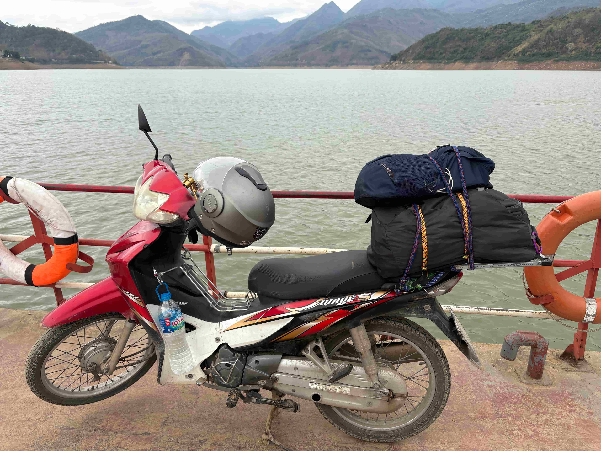
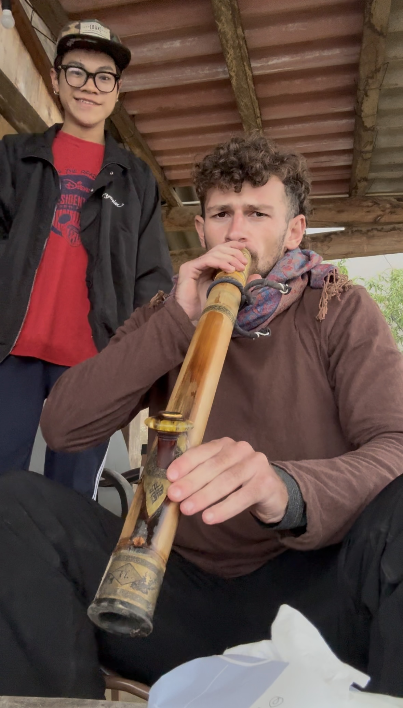
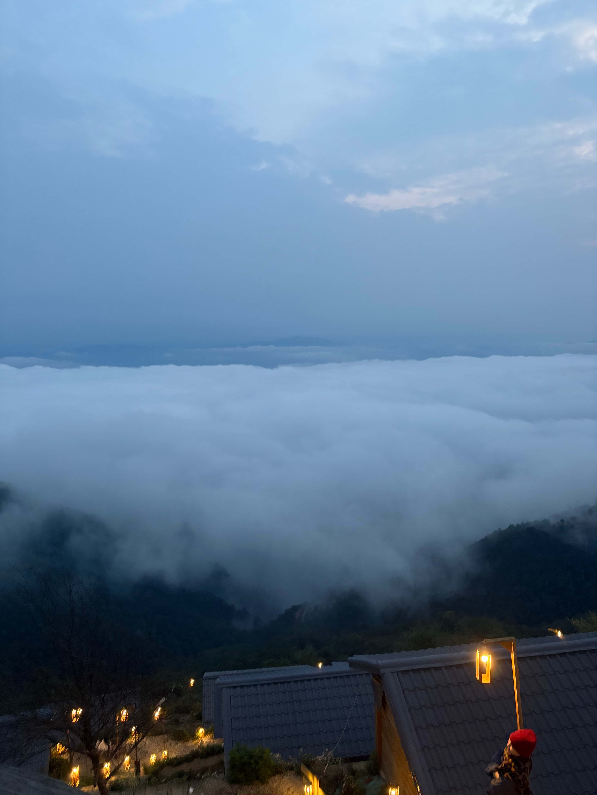
Friday, April 4th, Mai Chau, Vietnam
They fixed my drone in Hanoi yesterday! I drove a total of 9 hours on the bike yesterday. That means today I chilled heavy. I am currently in the Mai Chau district. It’s a nice area in a valley surrounded by beautiful rice fields. There are a lot of Israeli backpackers here — it seems like a secret Israeli spot.
I drove back to Pu Luong today to see the beautiful mountainous terraced rice fields. I ran in the morning but not very well. The altitude really makes running hard.
I want to say some things about countries, cultures, and ethnicities. Many times when I think of a country — for example, “Vietnam” — I group all the people together as “Vietnamese people.” This is a very 2025 limited worldview. Traveling throughout SE Asia, I’ve learned about the complexity of ethnic, cultural, and national identities. It’s very stupid to view people purely by their nationality — especially in countries where the nations themselves are less than 100 years old.
This hit home while traveling in the mountains. You pass various ethnic minority villages, which are not “Vietnamese” per se. Vietnam is home to 54 officially recognized ethnic groups, with the Kinh (Viet) being the largest, making up about 85% of the population. The remaining 53 ethnic minorities include groups with distinct languages, traditions, and histories. Through my travels, it seems that people identify most closely with their ethnicity. I can say that’s true even for myself.
When you take a look at yourself and ask “Who am I?”, what do you think? Your ethnicity greatly influences your culture and customs — much more than your nationality, I’d argue.
I want to integrate into the culture here more. I think that comes with understanding the diverse ethnic and cultural history. Riding a motorbike for so many hours alone is great for some introspection.
My birthday is in three days. I think life is about never being satisfied. You can always improve. You can improve your mind, body, spirituality, emotions. I’m not satisfied. I want to improve in all my faculties. That being said, you have to have respect and happiness for the current state of things — and recognize how far you’ve come.
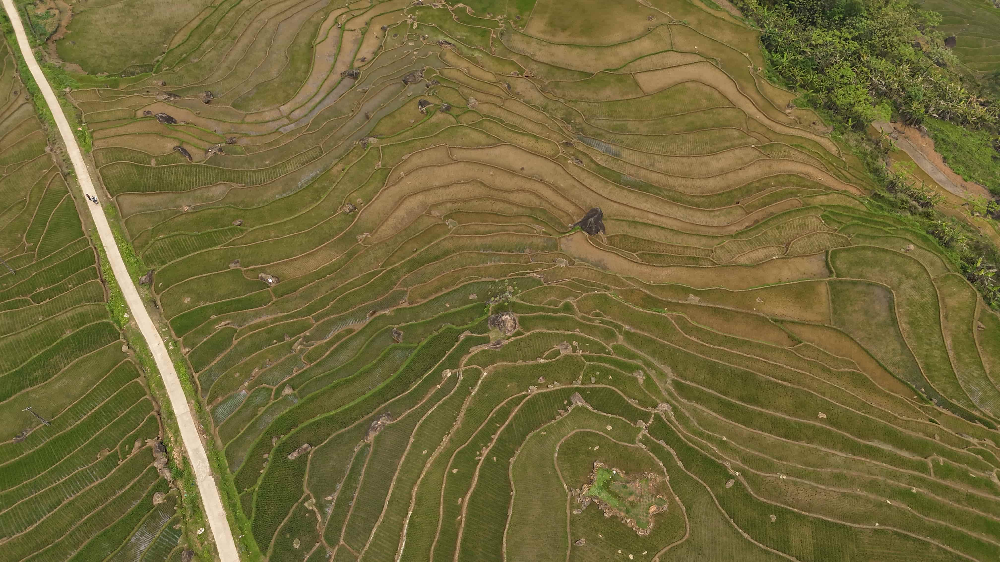
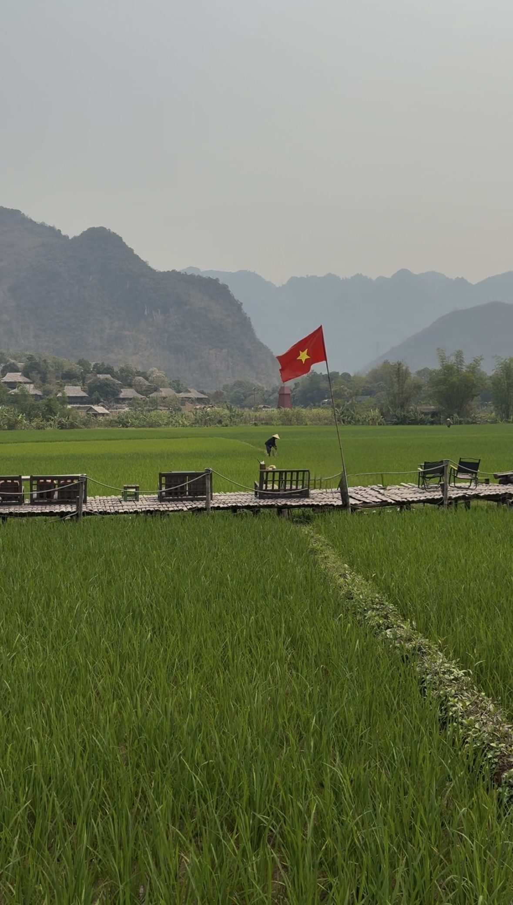
Thursday, April 3rd, Hanoi, Vietnam
In the morning, I was a rural Vietnamese schoolgirl. In the afternoon, I was a local bike mechanic. Now, I am a big-city tech guy. These are the various faces and walks of life I encountered today. I woke up at 5:45 AM on a mission—to fix MR Drone! I left Pu Luong for Hanoi, driving through beautiful rural villages, passing all the little kids on their way to school. They were riding small electric bikes. It was cute, and I felt like one of them. It reminded me of when I used to drive to school at 6 AM in high school. I was so tired I almost crashed every day—but somehow, I never did. I stopped for gas and coffee. The lady gave me drip coffee, which I had never had before. I was in a rush, so I barely drank any of it before continuing my drive. Slowly, I exited the rural mountains and entered the lowlands. About two hours in, I stopped for an oil change. The guy who sold me my bike told me to get one every 600 km. It had been 600 km, so I stopped to be safe. I want to take good care of it.
I pulled up to a random bike shop, and the guy changed my oil. Another guy in the shop was holding and petting the most beautiful chicken I have ever seen.
I continued my journey. The first 2.5 hours were adrenaline-filled and went by quickly. The last two hours were grueling. As I got closer to Hanoi, I found myself stuck behind so many trucks, dirt kicking up in my face. The city traffic was nauseating. I swerved in and out between vehicles. I was on a mission.
You can’t stop a man on a mission. It feels good to be a man on a mission. To be a man on a mission, you have to care a lot about the cause.
I really felt like I was in a video game—starting at the crack of dawn in the rural mountains of Vietnam, speeding down winding roads, and now navigating the chaos of the city, dodging cars and bikes. I was frustrated I had to do this. But I told myself I couldn’t complain. How could I? I had bought a bike, was riding through Vietnam with no real destination, no deadlines, and was heading to fix a really nice drone!
I arrived in Hanoi at 11 AM. It was a five-hour journey.
I took the drone to the shop. At first, they told me it would take 2–3 days to fix. I told them I’d just go to another shop. No way were they that busy. They ended up taking the drone.
Then, they told me I needed to replace the entire PCB—for a hefty price. Since I studied EE, I knew they were yanking my chain. I asked to speak with the technician. He explained the issue: the USB-C connector was broken, and the top layer of copper was ripped off.
I knew some people at TI who could have soldered the connector back on—granted, these are probably some of the best PCB technicians in the world. But I obliged, agreeing to replace the whole PCB for the price. I just really wanted the drone back, and quickly. It wasn’t worth my time or effort to find someone to fix it by hand.
That brings up an interesting idea about cost and economics. Pricing is a function of demand but also of how badly the consumer wants something and how quickly. These repair shops must have insane profit margins. People will pay a premium for speed.
I’m now waiting for the drone. Hopefully, he finishes soon with no problems. I want to drive back to the mountains today—I don’t want to stay in Hanoi. The weather here is nice for the first time since I’ve been here, and yet, I’m sitting in a drone shop. Oh well. I can’t complain!
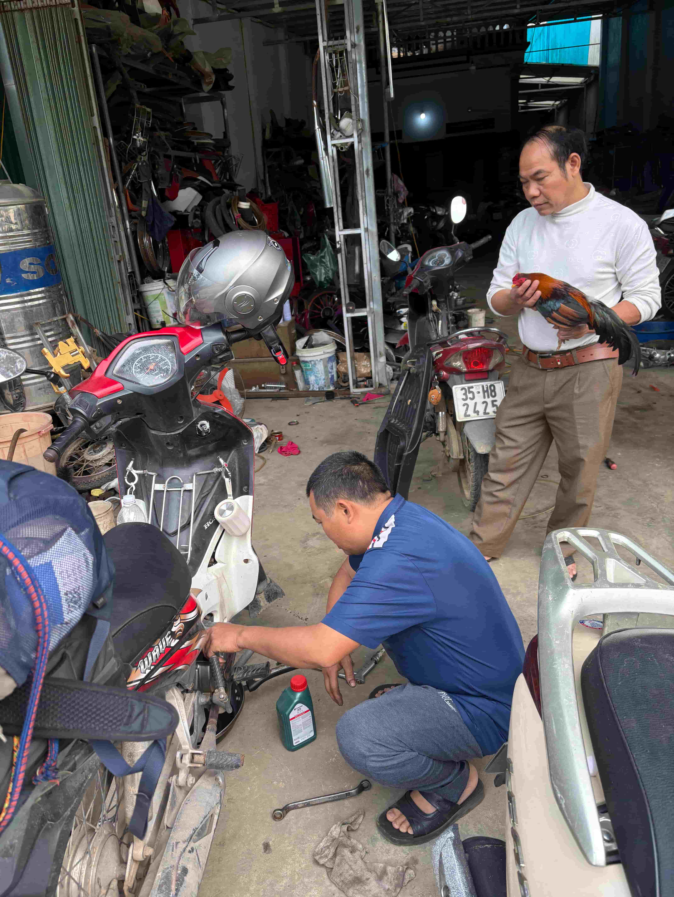
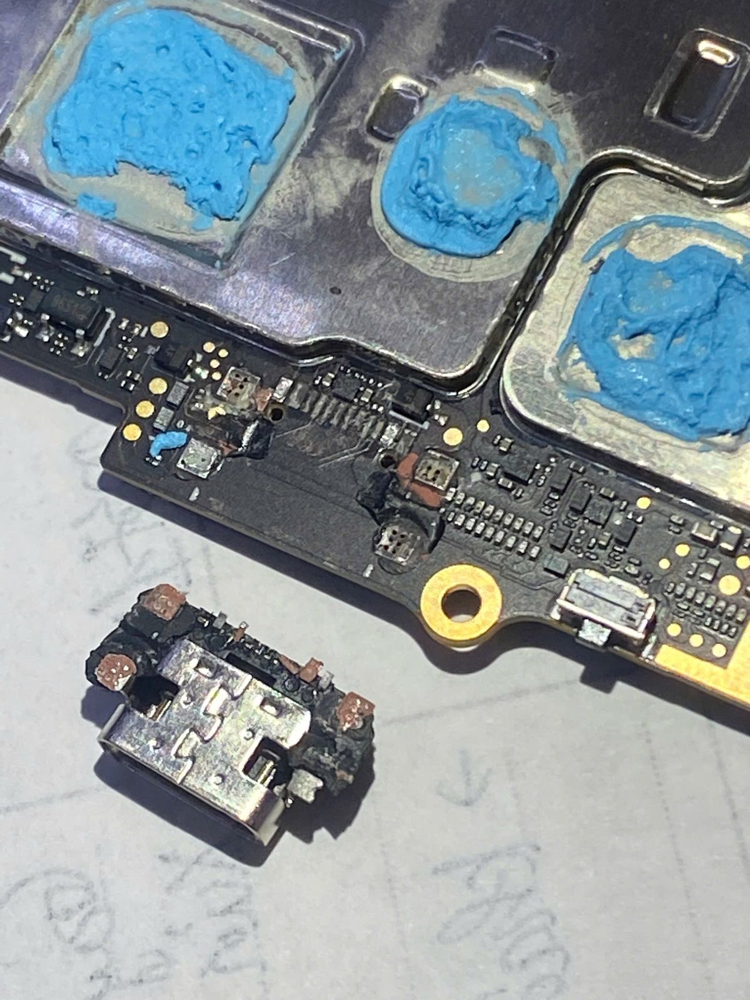
Wednesday, April 2nd, Pu Luong, Vietnam
I took the morning slow. I had a comfy bed and a nice private room for 8 dollars. I got to do some pushups, stretches, and abs. The owner of the homestay told me a route to take to get to my next destination. I followed his advice, hoping to see some stunning views. I drove for about 30 minutes through very remote villages. It was so cool. I drove until I noticed the road stopped. I was in a local village and tried to ask for directions. I didn’t know if I should keep going or turn around. Sometimes you have to drive on unpaved roads to reach the good views, and I thought this was one of those. I managed to communicate with a local farmer. She told me to turn around. I did so and checked the map to see where I went wrong. I’d gone down the wrong road. The journey is all about getting lost anyway.
Before I started driving again, I stopped for some coffee. I was sitting on a beautiful patio overlooking rice fields. I ate crackers. Some local guys invited me to sit with them. I joined them, and they made me drink beer. I obliged. It’s fun laughing with each other when you have no idea what the other is saying. I thanked them and headed off north.
I continued to drive and passed through the terraced rice fields the homestay owner had talked about. I took out my drone and got some awesome footage. I noticed my drone’s battery was dying, so I plugged it into my portable charger. The drone slipped from my hand, but the charging cord stayed attached. When I grabbed it to store it, I noticed the USB-C port had detached. I could no longer charge my drone. I was actually really sad. I’ve been loving flying the drone and want it for my biking adventure. I didn’t know what to do.
I redownloaded WeChat and asked the DJI rep. Long story short, I spent the rest of the afternoon driving around town, trying to find a place to fix it. I went to local electronics stores to see if they could help. I know it’s an easy fix, having soldered many PCBs before. I used a translator to explain the issue. People were willing to help. The problem was that the screws connecting the case, which covers the internal circuitry, were very small, and nobody could find the right size bit. Someone eventually found the right bit, but after messing with it so much, they ended up stripping the screws. So close, yet so far.
I contemplated what to do. I researched and found a DJI-authorized drone repair shop in Hanoi. I decided tomorrow I’ll wake up early and drive 4 hours to get it fixed, hopefully. I found a homestay near the beautiful terraced rice fields. The owner wanted 150,000 dong, or almost 6 dollars. On Booking.com, it was 3 dollars! I showed her, and she gave me the three-dollar price. Tomorrow morning, I’ll start my mission to fix my drone. Nothing can stop a man on a mission. I hope they can fix it and that it’s worth it so I can take amazing footage throughout northern Vietnam.
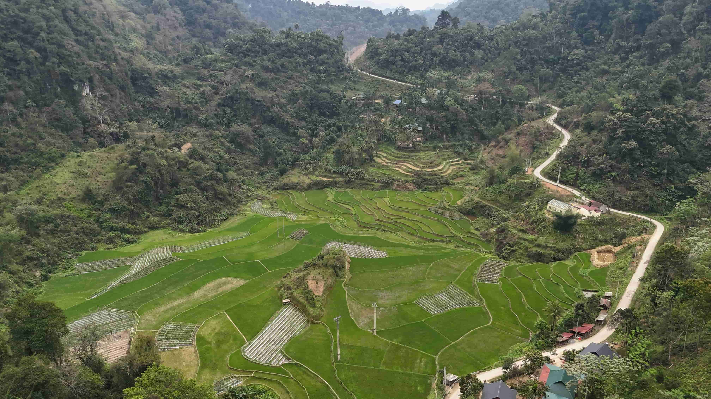
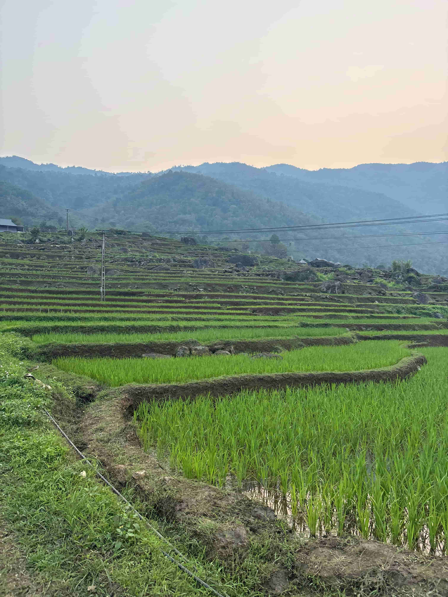
Tuesday April 1st, Pu Luong, Vietnam
Yesterday was cool, but today was way cooler. I slept pretty well and left touristy Ninh Binh to head north. This was my first biking experience in the mountains and rural Vietnam. I felt so grateful, riding with the wind in my face through unbelievably beautiful landscapes. I felt energized and free. Rice fields and mountains surrounded me on all sides.
I put my destination into Google Maps, which offered a couple of different routes. I asked ChatGPT which one I should take for the most beautiful scenery, and it recommended the slightly longer one. When I reached the intersection between the two routes, I decided to take the longer one with no large cars. It led me through small villages and roads with no other tourists—or even other vehicles—in sight. The scenery was incredible. I rode fast and confidently.
About an hour and a half in, I was hyped, flying downhill. Out of nowhere, the nice paved road turned to gravel, dirt, and stones. Anyone who has ridden a motorbike knows that gravel is your worst enemy. I didn’t have enough time to slow down. I slammed on the brakes, but I had too much momentum going downhill. My back wheel lost traction and started swerving left and right. I lost control.
When I finally regained control, I thought I was safe—but I still couldn’t slow down. Since I was riding a semi-automatic bike, shifting gears was crucial. I tried to shift down to regain control. A lower gear helps slow you down naturally without relying too much on the brakes, preventing skidding. It also gives you better stability and traction, which is crucial on loose gravel.
Anyway, I was absolutely booking it down this hill at about 60 km/h, my back wheel still swerving side to side. Somehow, I didn’t crash and made it safely. Not to toot my own horn, but I think this cements me as one of the greatest all-terrain motorbike riders in history. I told you back in Gainesville that I was UF’s top rider—now my accolades just keep stacking up.
After this adrenaline-filled experience, I was still shocked that I didn’t totally eat it. I pulled off to the side of the road and found a beautiful hidden rice field. I took out my drone and got some amazing shots. Some Vietnamese guy tried to talk to me, but he didn’t understand that I didn’t speak a lick of Vietnamese. I continued driving.
Then, about five minutes later, the phone holder on my motorbike broke. I caught my phone between my legs just in time. The phone holder is absolutely essential for maps and navigating through the mountains of Vietnam. I thought I was screwed. But I literally drove 100 meters, asked the first shop if they had a phone holder, and they did! The woman helped me install it, and I was able to head off with no problems.
Well, actually, I did notice that my rack, where I store my bags, had snapped a little—but I don’t think it will affect its functionality.
I kept driving through insane landscapes, stopping a couple more times to fly my drone. Around 5:00 PM, I made it to Pu Luong. The views kept getting better and better—terraced rice fields and the coolest villages I had ever driven through. I turned down some random roads and was continually amazed by the landscapes.
I found a nice homestay before dark and negotiated the price down by 1,000,000 dong. Now, I’m in a nice private room. I drank rice wine with the owner, and we chatted a little bit.
Today was amazing.
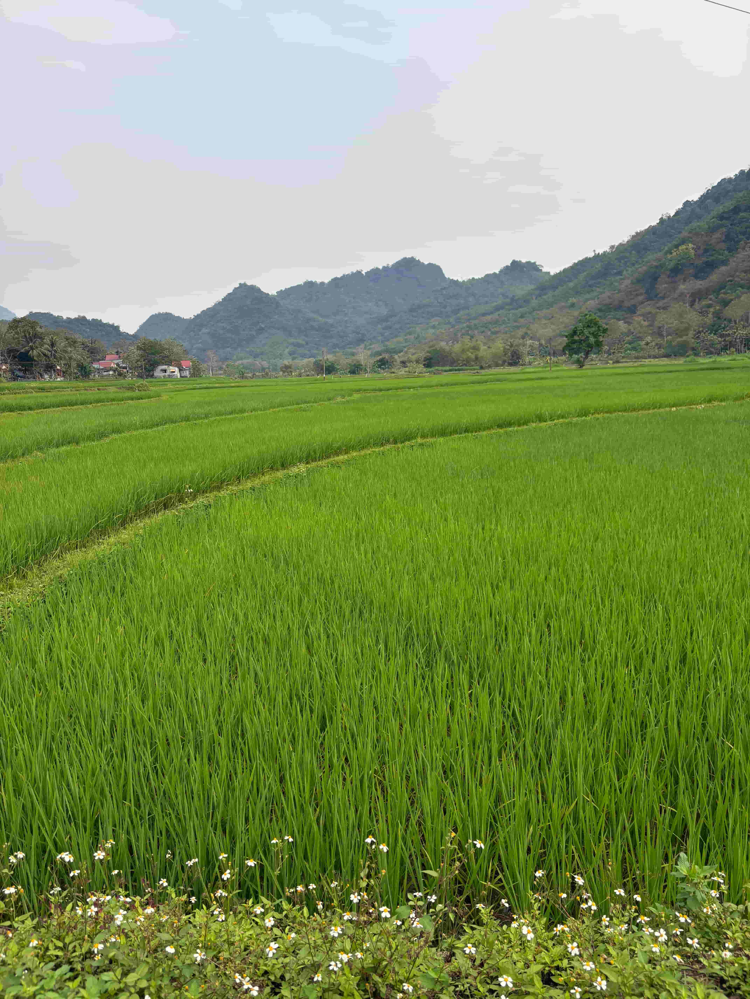
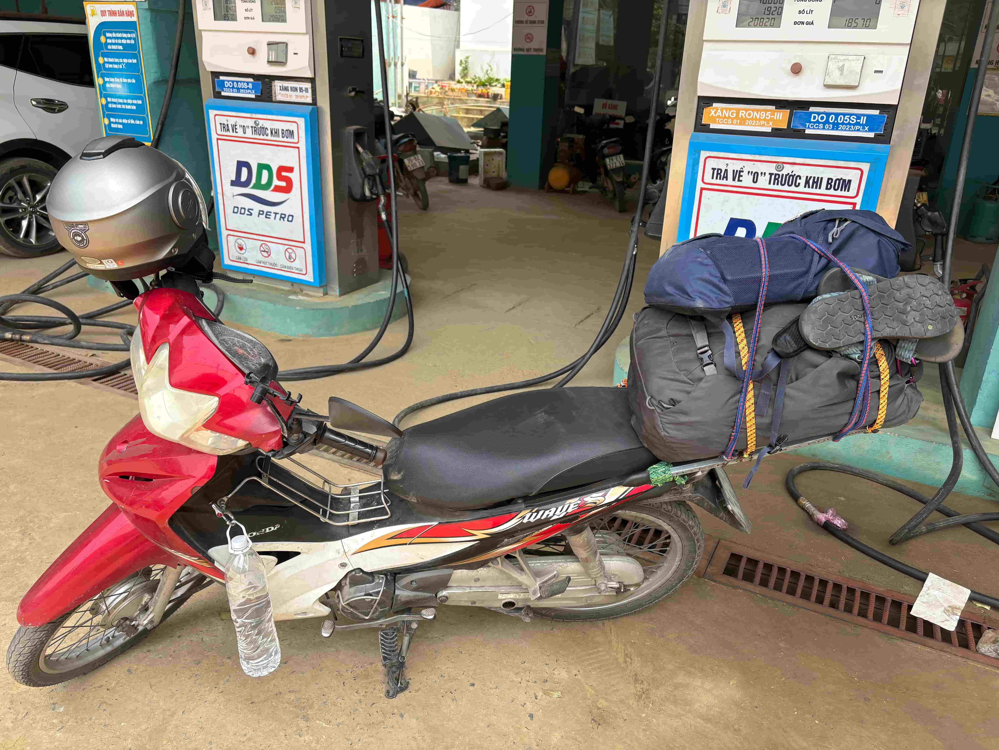
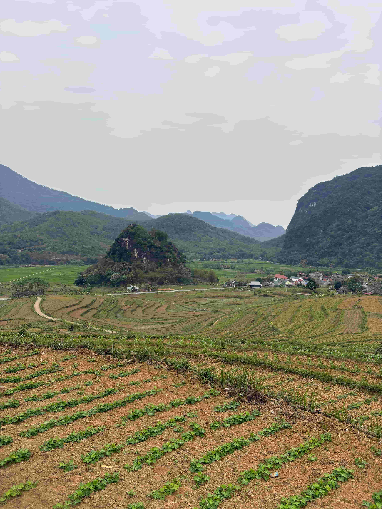